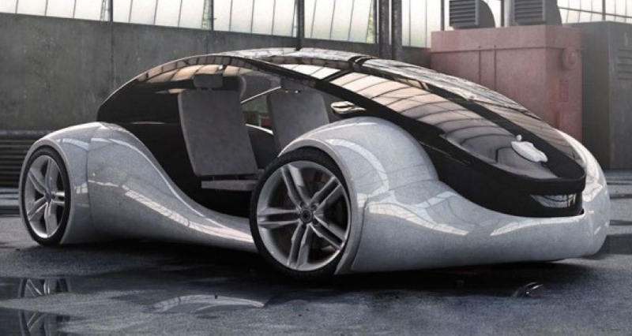

El CEO de Tesla no tuvo pelos en la lengua para afirmar el retraso del Model 3, pero supo dar la vuelta rápidamente a la situación. Musk afirmó que en 2019 estaremos preparados para ver el Autopilot 2.0 de Tesla, que será, según predice, “al menos de un 100% a un 200%” más seguro que la conducción humana.
APPLE suele llegar la última pero procura llegar mejor que los demás. El primer paso para entrar en la carrera del coche autónomo lo dieron en diciembre del año pasado,pidieron permiso a DMV, el equivalente a la DGT de España, para comenzar a rodar por las carreteras de California con su versión inicial del coche autónomo. Querían evitar así los disgustos y enfrentamientos de Uber con las autoridades.
© Página realizada por J.M.O. en 2018.